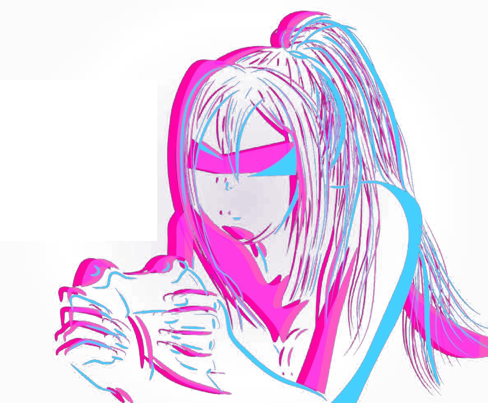
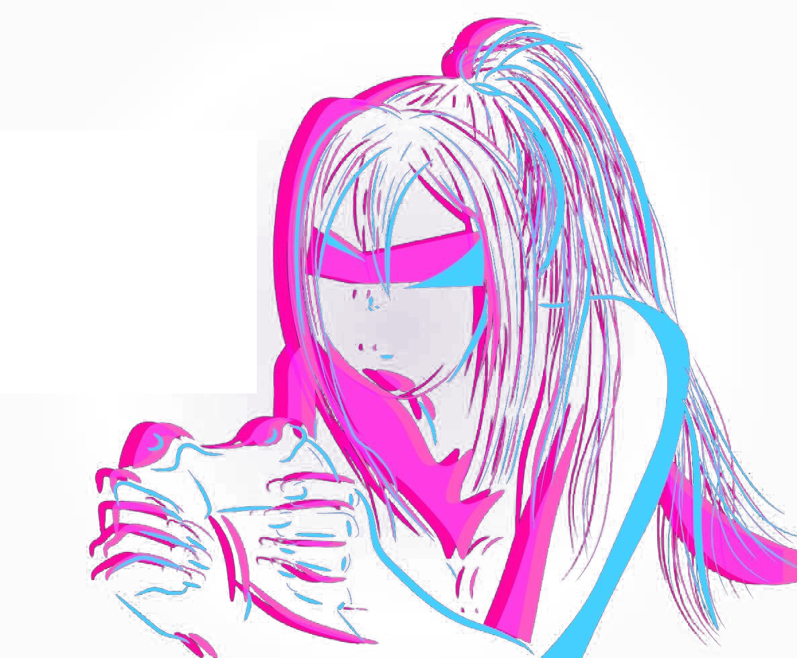

TAKHIR LATYPOV TAKHIR LATYPOV
Student of Infobez
Добро пожаловать
Почему сайт в стиле Retrowave?
Как говорил Дмитрий Анатольевич Медведев: "Никто никогда не вернется в 2007 год". Значит, в 80-тые мы не вернемся тем более. Сайт наполнен элементами Synthwave, чтобы мы могли ощутить себя подростками в 80 с ее неоновой атмосферой и культурой VHS
Мои любимые игры


Обо мне
Хто я?
Я в своем познании так преисполнился, что будто миллиарды и миллиарды лет живу на этой земле. Мне уже мир абсолютно понятен, я лишь наслаждаюсь фрактальным подобием, бесокнечно вечным, созерцаю грани бытия и области сознания.